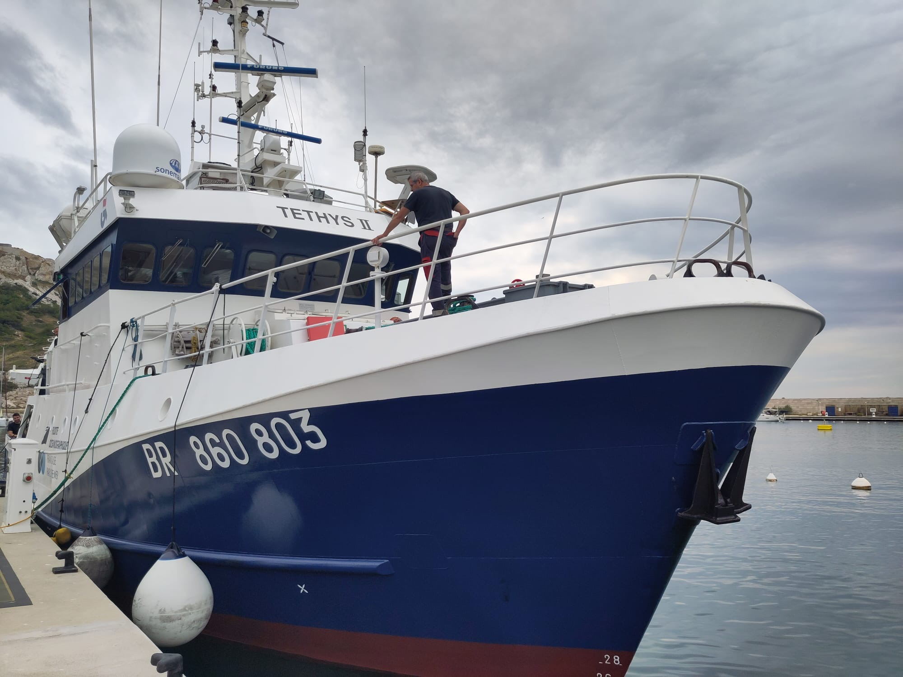

 Le N/O Téthys II | Projet PHYBIO 2026Cours OPB201 -Mesure en mer |

| Formation | Master Sciences de la Mer — Océanographie Physique et Biogéochimique |
|---|---|
| Description | Ce projet, réalisé dans le cadre de l'unité OPB201 (Mesures en mer) au sein du Master 1 Sciences de la Mer d'Aix-Marseille Université, porte sur la campagne océanographique PHYBIO 2026 menée à bord du navire de recherche Téthys II. Cette mission scientifique, exploitée par l'Ifremer et armée par GENAVIR, avait pour objectif de caractériser les propriétés physico-chimiques des masses d’eau au large de Marseille. L'étude s'est articulée autour de trois zones d’intérêt : le canyon de Cassis, une radiale traversant le Courant Nord, et l’émissaire de Cortiou pour l'étude de son panache de rejet. Le projet s'articule autour des axes d'analyse suivants :
|
| Documents | Rapport (Google Drive) |
| Galerie | Chaque lien ouvre l'image en taille réelle (jusqu'à 3,1 Mo).
|


Dernière mise à jour : 11/06/2026